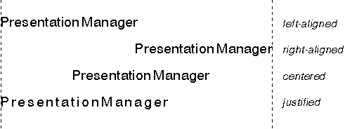

When considering text alignment, take the versatility of the coordinate systems into account. The following definitions depend on the current coordinate system:
World Coordinate Values
┌───────────────┬─────────────────────────────────────────────┐ │Value │Corresponds to the direction of... │ ├───────────────┼─────────────────────────────────────────────┤ │Left │The lowest x-coordinate value │ ├───────────────┼─────────────────────────────────────────────┤ │Right │The highest x-coordinate value │ ├───────────────┼─────────────────────────────────────────────┤ │Top │The highest y-coordinate value │ ├───────────────┼─────────────────────────────────────────────┤ │Bottom │The lowest y-coordinate value │ └───────────────┴─────────────────────────────────────────────┘
To position a character string horizontally, you must know the width of the output area and the length of the character string. The PM provides three different functions for determining the width of the output:
┌──────────────────────────────┬──────────────────────────────┐ │Function Name │Description │ ├──────────────────────────────┼──────────────────────────────┤ │GpiQueryGraphicsField │Returns the bottom-left and │ │ │top-right corners of the │ │ │graphics field in presentation│ │ │page units. │ ├──────────────────────────────┼──────────────────────────────┤ │GpiQueryViewingLimits │Returns the viewing limit. │ ├──────────────────────────────┼──────────────────────────────┤ │GpiQueryPageViewport │Returns the page viewport in │ │ │device units. │ └──────────────────────────────┴──────────────────────────────┘
GpiConvert changes coordinates into world coordinates. To calculate the width of the output area, subtract its left from its right. For example, if the left is 30, and right is 600, the width of the output area is 570 world coordinates.
The PM provides three different functions for determining the length of the character string primitive:
GpiQueryTextBox returns the relative coordinates of a parallelogram that surrounds the character string. By subtracting the x-coordinate of TXTBOX_BOTTOMRIGHT from the x-coordinate of TXTBOX_BOTTOMLEFT, an application can determine the length of the string.
GpiQueryCharStringPos returns an array of points, in which the world coordinate position of each character in the string is recorded. The last value in the array becomes the new current position if the string is drawn using GpiCharStringPos. By subtracting this position from the current position (obtained using GpiQueryCurrentPosition), the length of the string can be determined.
GpiQueryCharStringPosAt also returns an array of points, in which the world coordinate position of each character in the string is recorded. The last value of the array becomes the new current position if the string is drawn using GpiCharStringPosAt. This function accepts a specified starting position for the character string. By specifying a starting position of (0,0) for example, an application can determine the length of the string without subtraction.
The current position actually is not updated by either GpiQueryCharStringPos or GpiQueryCharStringPosAt.
When a character string does not fill the width of the output area, it can be positioned in one of the four ways illustrated in the following figure. 
Horizontal Positioning of Text Strings
To left-align the text, set the x-coordinate of the current position to the left of the output area before drawing the character string. GpiSetCurrentPosition must be used to set the current position if your application draws the string using either GpiCharString or GpiCharStringPos. Both GpiCharStringAt and GpiCharStringPosAt accept a starting position as input.
To right-align the text, subtract the length of the character string from the width of the output area, then add the difference to the x-coordinate of the current position before drawing the character string. If the output area is 570 world coordinates wide, for example, and the character string is 436 world coordinates long, add 134 to the x-coordinate of the current position before drawing the text.
To center the text, subtract the length of the character string from the width of the output area, then divide the difference by 2 before adding it to the x-coordinate of the current position. If the difference is 134, for example, you add 67 to the x-coordinate of the current position.
To justify the text, so that the text string fills the width of the output area, distribute the surplus space throughout the character string. For example, you could add the extra space to the break characters only, or you could share it equally among all characters in the string. Text justification requires the individual positioning each character in the string using either of the following calls:
Both functions enable you to specify a different character increment for each character in the string. Distance is measured from the character reference point of one character to the character reference point of the next character. The values you specify apply only to the character string supplied at input; they do not become current attribute values.
If you are formatting a block of text, the string might be wider than the output area, or longer than 256 characters. In either case, your application must separate the string into smaller groups of characters so that it fits either criteria. A good starting point is to determine the number of characters planned for each line. Dividing the output width by the character cell width can provide a first estimate as to where to separate a character string. An application can use this estimate to work through the string looking for spaces. Each time you find a space, compare the length of the string (up to the space) with the width of the output area. When the string is longer than the output area, work back to the previous space and display or print that part of the string. You can format the entire block of text for the output area in this way.
When you are formatting a block instead of a single line of text, an application must specify the vertical placement of each line. If you are using an image font, you have the assurance that each character is the same height. However, you do not have that assurance with an outline font, nor that the text block is written in the same font. Therefore, when calculating the separation of lines, avoid using complex combinations of font metrics values. Instead, it is recommended that you multiply the desired point size, or em-height metric, of the text by 1.2.